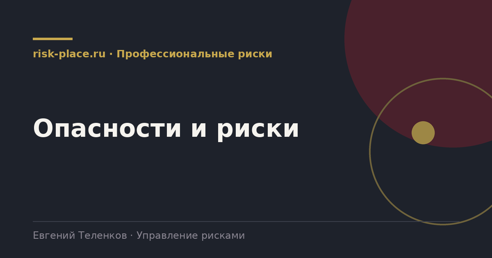

risk-
risk-Обход рабочих мест
- Наблюдение за фактическим выполнением операций, а не за тем, как они описаны в инструкции
Главная · Библиотека · Профессиональные риски · Опасности и риски
Библиотека · Профессиональные риски
Опасность существует всегда, риск возникает при контакте человека с опасностью. Разница определяет всю логику работы.

Опасность это источник, способный причинить вред. Электрический ток, движущиеся части механизма, высота, шум, химическое вещество, скользкая поверхность. Опасность существует независимо от того, работает кто-то рядом или нет.
Риск возникает тогда, когда работник контактирует с опасностью, и характеризуется вероятностью и тяжестью возможного вреда. Отсюда следует основной принцип управления, безопаснее устранить опасность, чем управлять риском. Убрать высоту, заменить вещество, автоматизировать операцию всегда надежнее, чем выдать средство защиты и провести инструктаж.
Ориентир для обхода. Минтруд публикует рекомендации по классификации и описанию опасностей, ими удобно пользоваться как каркасом.
Четыре источника, их надо использовать вместе.
Перечень составляется по рабочим местам или по группам однотипных рабочих мест. Для каждой опасности указывается источник, характер возможного вреда, где и при какой операции возникает контакт, кто подвергается воздействию.
Две частые ошибки. Первая, перечень составлен по цехам, а не по рабочим местам, и потому не позволяет ознакомить работника с рисками его конкретного места. Вторая, перечень скопирован из типового документа и содержит опасности, которых на предприятии нет, а тех, что есть, не содержит. И то, и другое инспектор обнаруживает за десять минут обхода.
Частые вопросы
Одна форма для любого вопроса
Расскажем о ближайших датах, предложим формат под ваш состав участников и назовем порядок бюджета.
Предпочитаете почту — напишите на info@risk-place.ru. Адрес: Москва, улица Скаковая, 32с2.